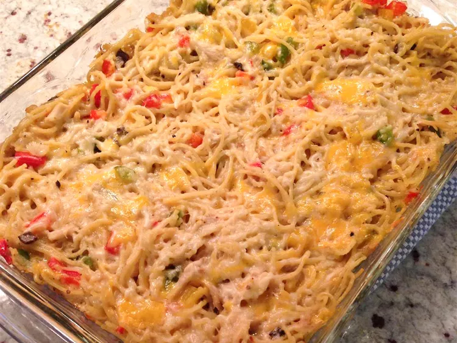

Spaghetti

Spaghetti Chicken Caserole
Traditionally, Spaghetti is served freely in a bowl after being cooked in boiling water. Here, it is cooked in the oven and served as a caserole dish.
Ingredients
- 8 ounces spaghetti, broken into pieces
- 3 cups cooked, cubed chicken meat
- 2 cups shredded Cheddar cheese, divided
- 1 (10.5 ounce) can condensed cream of mushroom soup
- ½ cup chopped onion
- ¼ cup chopped pimento peppers
- ¼ cup chopped green bell pepper
- ¼ cup white wine
- salt and pepper to taste
Steps
- Preheat the oven to 350 degrees F (175 degrees C).
- Bring a large pot of lightly salted water to a boil.
Cook spaghetti in the boiling water, stirring occasionally, until tender yet firm to the bite, 10 to 12 minutes.
- Drain spaghetti and transfer to a large bowl. Add chicken, 1 1/2 cups Cheddar cheese, condensed soup, onion, pimentos, bell pepper, wine, salt, and pepper.
Mix until well combined, then spread mixture into a 9x13-inch baking dish.
- Bake in the preheated oven for 30 minutes. Sprinkle remaining 1/2 cup Cheddar over casserole and bake until melted, about 15 minutes longer.